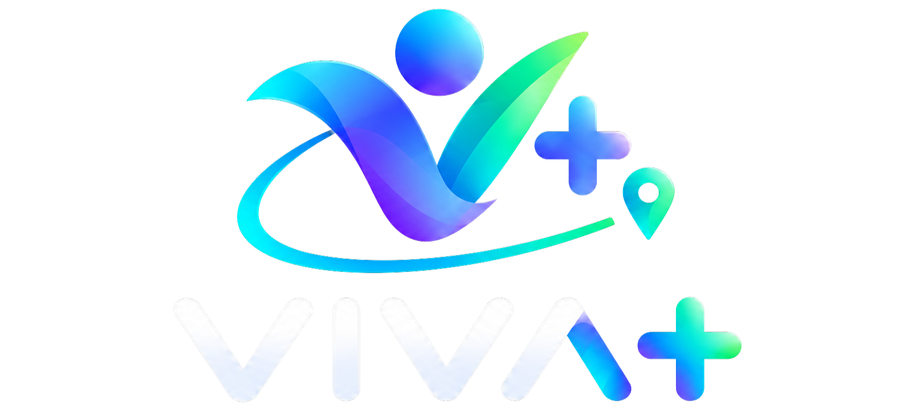

Mapa de locais
Conheça espaços e locais de Caruaru que podem incentivar a prática de atividades físicas.
Uma iniciativa que conecta informação, saúde e bem-estar para incentivar escolhas mais saudáveis no dia a dia.

O VIVA+ é um projeto acadêmico desenvolvido com o propósito de aproximar a população de informações e recursos que incentivem uma vida mais ativa e saudável.
Com foco em Caruaru, Pernambuco, a plataforma reúne conteúdos e ferramentas que ajudam as pessoas a conhecer possibilidades de atividades físicas, cuidar da alimentação e valorizar o próprio bem-estar.
Nossa missão é facilitar o acesso à informação sobre saúde, atividade física e alimentação, estimulando pequenas mudanças que podem contribuir para uma melhor qualidade de vida.
Queremos utilizar a tecnologia como uma ferramenta de aproximação entre as pessoas e as oportunidades disponíveis na cidade, promovendo conhecimento, autonomia e conscientização.
Conheça espaços e locais de Caruaru que podem incentivar a prática de atividades físicas.
Acesse uma ferramenta educativa para estimar sua taxa metabólica basal e seu gasto energético diário.
Descubra como a atividade física e os hábitos saudáveis podem fazer parte da sua rotina.
Uma iniciativa pensada para valorizar a cidade e incentivar seus moradores a descobrirem novas possibilidades de movimento, saúde e bem-estar.